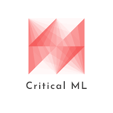
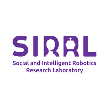
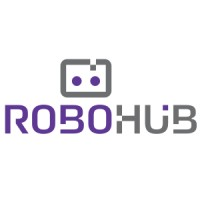

Built AI-powered systems to automate the diagnosis of lung ultrasound scans.
Developed AI based screening tool confirming with 96% certainty the presence of fluid in lung ultrasound scans.
Achieved 80% accuracy (IoU) in segmenting effusions and consolidations in lung-ultrasound using TensorFlow.
Implemented MLOps pipeline using Azure, SQL & OpenCV to process, ingest & version data for FDA approval.
Integrated WandB into ML projects for dash-boarding and logging visuals during training and evaluation.
Reduced dataset fetching time by 91% through cross-platform deployment of pipeline producing 7.8 million M-Mode images from 140,000 B-Mode videos per version, automated through Unix & Shell scripting.
Machine Learning Intern
Kolena Inc.
Jan 2024 – Aug 2024San Francisco, CA
Enhancing the way Machine Learning systems are evaluated.
Automated evaluation of Gen-AI by fine-tuning Vision-Language models to model human preference.
Improved RAG Generator accuracy by 8% on finance data through improved PDF-parsing & LLM-prompting.
Accelerated creation of textual datasets by 15x by building an LLM powered web-application using Streamlit.
Enhanced detection of AI model errors for users by building data analysis pipeline identifying edge cases.
Software Engineering Intern
IntelliSports
Sep 2022 – Aug 2024Montreal, QC
Developed activity recognition pipelines and modeled user application usage.
Boosted cheat-detection accuracy by 30% by feature engineering IMU Sensor data using Scikit-learn & SciPy
Optimized inference speed on CPU machine to 1.8x original by leveraging light-weight sklearn models.
Elevated mission count by 2.3x by deploying detection pipelines on EC2 for punch, crunch, high-knee, & jump.
Identified onboarding flow with +50% retention by conducting decision-tree & SVM analysis on early user data.
Built data visualization platform, showcasing user physical activity growth of 300%, employed in pitches that secured $1.4 million in funding using PHP and MySQL.
Research Experience

Student Researcher
Critical Machine Learning Lab
Sep 2023 – PresentWaterloo, ON
Investigating ways on how AI models can adapt to new environments.
Achieved State of the Art results in Domain Adaptive Semantic Segmentation using Vision-Language models.
Research Assistant
Vision and Image Processing Lab
Jan 2022 – Apr 2023Waterloo, ON
Researched ego-centric pose estimation techniques using spatio-temporal analysis.
Outperformed Egocentric HPE State of the Art by 38% via insertion of spatio-temporal data using Transformers.

Research Assistant
Social and intelligent Robotics Research Lab
Sep 2021 – Dec 2021Waterloo, ON
Implemented suite of (IMU) feature extraction algorithms for Human Robot Interaction.
Researched and implemented suite of feature extraction algorithms relevant to singla detection for AI.

Research Intern
Human Centered Robotics and Machine Intelligence Lab
May 2021 – Aug 2021Waterloo, ON
Developed and deployed facial and emotion recognition pipeline on humanoid robot.
Delivered 99.3% on LFW (Face ID) and 72.7% on FER2013 (Emotion) benchmarks using DLIB and Tensorflow.
Designed multi-input Keras model using pybind11 bindings of a C++ toolkit, informed by t-SNE data analysis.
Deployed facial identity and emotion recognition pipeline using ROS, Flask and PostgresSQL on the Reem-C robot, highlighted by researchers in International Robotics conferences.